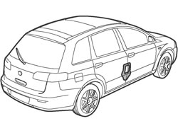
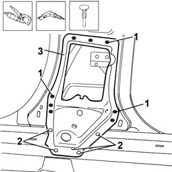
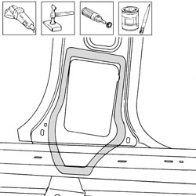
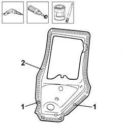
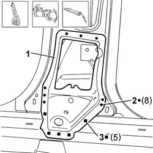
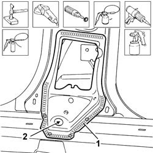

7210B11 R R LOWER CENTRAL PILLAR INNER STIFFENER TO FASTEN SAFETY BELT, (ONE) LH OR RH
- Path
- Procedures > 72 PANELS AND FRAMES > 7210 REMOVING-REFITTING > 7210B STRUCTURAL ELEMENTS (CENTRE AND REAR SECTION) > 7210B11 R R LOWER CENTRAL PILLAR INNER STIFFENER TO FASTEN SAFETY BELT, (ONE) LH OR RH
- Kind
- repair procedure (removal / refitting; the operation number is the code)
- Applies to
- all engines; all production periods
- Interactive page
- https://sloeber94.github.io/elrnDB-fCrm/en/#/194001225
Applies to: all engines; all production periods
 Removing
Removing
 Refitting
Refitting- Check that the components connected are not distorted by checking the bodyshell alignment measurements using suitable equipment (gauges, templates or jigs).
- Straighten the body as necessary.

Applies to: all engines; all production periods
1. Use the chamfering machine to remove the spot welds shown in the diagram.
2. Use the drill and chamfer the spot welds in the areas shown in the diagram.
- Use the hammer and chisel and remove the spot welds chamfered previously.
3. Remove the seat belt reel mounting.

Applies to: all engines; all production periods
- Straighten the edges of the vehicle using a hammer and dolly block.
- Remove the spot weld residues using a disc grinder.
- Use a rotary brush to clean the areas treated previously.
- Apply electro-galvanizing paint.

Applies to: all engines; all production periods
1. Use the drill at the points shown on the replacement reinforcement.
2. Remove the anti-corrosion treatment from the entire perimeter of the inner and outer parts using the rotary brush.
- Apply electro-weldable paint to the edges treated previously.

Applies to: all engines; all production periods
Refitting
Removing1. Position the reinforcement for fastening the seat belt correctly on the inner part of the centre pillar and secure it using self-locking clamps.
2. Use a spot welder in the areas shown.
3. Use a MIG welder and weld the openings made previously in the replacement part.

Applies to: all engines; all production periods
- Correct any distortions to the panel using a hammer and dolly block.
- Use a disc grinder to level and remove the welding.
- Use a rotary brush to clean the areas welded previously.
1. Apply anti-oxidant protection to the areas involved in the welding.
- Seal the join lines between the replacement part and the vehicle.
- Proceed with the painting stage.
2. Apply the wax-based oil protection to the inside of the underdoor side member.
